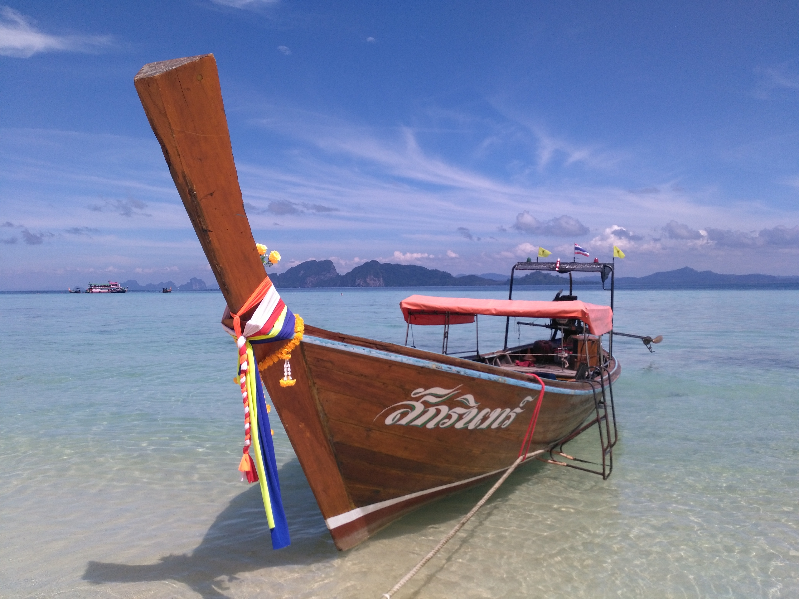
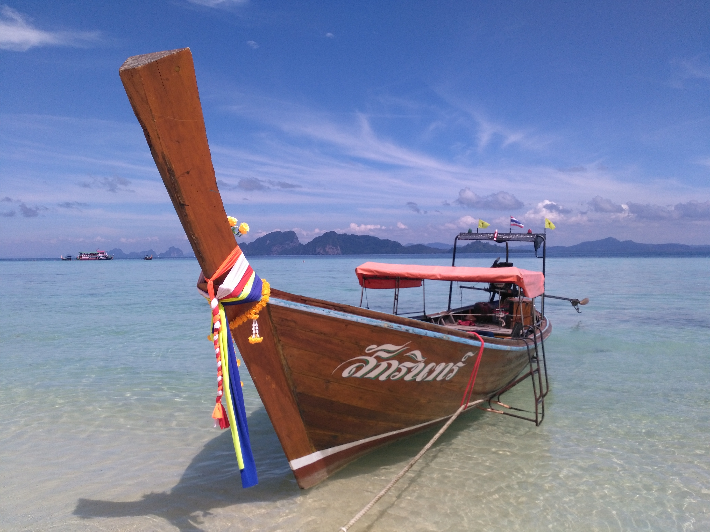

Koh Lanta et Koh Mook
Noël, le jour de l'an et le passage à la trentaine... dans un paysage de rêve
Du Laos à Koh Lanta
Passage sans encombre de la frontière Laos -> Thaïlande au niveau de Nakhon Phanom. Cette fois-ci, pas de visa à prendre, pas de grosses démarches à faire, c'est l'invitation du roi ! 30 jours gratuits pour les français et sûrement d'autres nationalités. Bon comme on aime bien se créer des difficultés avec les visas et que c'était trop simple, on s'est dit qu'on ferait une extension pour y rester deux semaines de plus quand cette exemption de visa se périmerait. Affaire à suivre.
Nous montons donc dans le bus en direction de Bangkok avec pour projet de faire par la suite Bangkok-Krabi. Nous devons retrouver Aurélie et Rémy demain après midi à Koh Lanta, soit à plus de 24h de bus d'ici et probablement un peu de bateau.
Bus de nuit sans encombre, nous arrivons à la gare de bus Mochit de Bangkok. On se met donc à essayer de 1) trouver le bâtiment principal de la gare après avoir été assaillis par des chauffeurs de taxi à 6h du mat' et 2) trouver un bus pour Krabi.
On demande à 3/4 personnes et au bout d'une heure de galère, on apprend qu'il faut changer de gare routière, mais que le bus part le matin et qu'on l'aura sûrement pas puisqu'il faut traverser Bangkok en taxi. SU-PER !
Je commence donc à googler toutes les destinations proposées, pour en trouver une qui nous rapprocherait de Krabi. Après un changement de gare routière, plusieurs négos à plusieurs guichets, un gros petit déj' : direction Surat Thani !
Cette fois-ci, c'est route de jour et j'ai pris la peine de réserver une chambre en arrivant car nous n'avons que très peu dormi. Sur la route, on se prend en pleine face le passage d'un pays "communiste" au capitalisme. Des MacDo, des Dunkin Donnuts, des Starbucks sont sur-présents de tous les côtés. Ca faisait longtemps !
Une fois à Surat Thani, la gare routière est comme d'habitude à 10km de la ville pour faire fonctionner l'empire des tuktuks et taxis. Enfin nous arrivons à notre hôtel après que le chauffeur de taxi se soit trompé d'établissement. On peut souffler.
Le lendemain nous essayons de trouver une compagnie de bus pour aller à Krabi, et il est encore difficile de départager les fausses des vraies (avec des deltas de prix du simple au triple parfois...). Nous prenons finalement un minibus, dans lequel nous effectuons la traversée. L'hôtel qu'Aurélie nous a gentillement réservé est dans le sud de Koh Lanta, et le chauffeur de minibus nous arrête au milieu de nulle part, juste à coté d'une rimbambelle de tuktuk. Les locaux restent "bizarrement" dans le minibus, je lui demande s'il va dans le sud et si nous pouvons rester. Il me dit que non, qu'il remonte. C'est ça oui, prend moi pour un jambon serrano. Nous sommes donc forcés de prendre un tuktuk, négocié âprement, et nous partons vers le sud... évidemment suivis par le minibus à qui j'ai grandement envie de montrer mon plus joli doigt.
Nous arrivons dans notre hôtel, un rassemblement de bungalows au bord d'une plage préservée. La propriétaire nous montre les bungalows les plus chouettes, histoire d'être sûrs qu'on ne les prendra pas (200€ la nuit, on est assez sûrs). Petit verre sur la terrasse magnifique, et Aurélie et Rémy arrivent AVEC DU SAUCISSON ET DU FROMAGE. Après 3 mois d'abstinence, on s'est bien tapés la cloche. Le soir, magnifique coucher de soleil sur notre plage, bienvenue sur les îles !
Koh Lanta
On ne va pas se mentir, on a passé une bonne partie de nos randos sur cette île à chanter ou meumeumer le générique, ou citer des phrases références de l'émission télé.
Premier jour plutôt peinard, plage, cocktails, jeu de carte. On est en vacances là ! On se renseigne pour les scooters pour le lendemain, et le lendemain on se dirige tranquillement vers le sud de l'île. Plusieurs arrêts en route, les plages sont belles et on est franchement agréablement surpris du petit nombre de touristes, alors qu'on est censés être en haute saison.
Nous descendons dans le parc naturel à la pointe sud, on se fait une petite rando, qui était annoncée plus longue, et baignade sur une plage paradisiaque agrémentée d'un panneau de mise en garde contre des méduses tueuses. Non je ne suis pas marseillaise, mais j'ai peur des poissons, méduses, insectes, araignées, serpents, alligators, hippopotames et la liste est encore longue. Au retour on se prend une saucée des tropiques assez phénoménale, mais rien n'entame notre moral, on se dirige vers la Tiger Cave. Qu'on a jamais trouvée, qui est sûrement quelque part dans la jungle, mais il commence à faire nuit et on fait demi-tour. De toute façon ce soir, c'est la veille de Noël, et on va la fêter selon une coutume Thaïlandaise, c'est à dire dans l'unique pub irlandais de l'île ! Santé !
Le lendemain on repart en expédition sur l'île, et on va visiter un village sur la côte est. Très sympa, assez touristique mais un style bien typique. On se réserve aussi un départ pour le lendemain pour Koh Mook, une des trois îles au sud de Koh Lanta. Le coin a l'air vraiment paradisiaque, ce qui devrait me faire avaler la pilule. Demain, passage à la trentaine...
Koh Mook
Après quelques embrouilles avant de rentrer dans le bâteau, la traversée est superbe, on passe au milieu de plusieurs petites îles qui nous font rêver. Puis nous arrivons à Koh Mook, au bout d'un très long ponton qui aboutit sur une île qui à l'air absolument magnifique. Et c'est le cas. Peu peuplée, une très très belle végétation, peu de touristes. Avec nos gros sacs, on traverse toute l'île en largeur pour arriver à nos chambres qui sont sur la côte opposée. Nous profitons de la plage, un peu de snorkeling, un magnifique coucher de soleil, encore une fois. Nous avons même trouvé une perle rare, un restaurant qui s'appelle le Hill Top, qui propose des plats succulents avec des portions énormes (ce qui change des minis portions thaïlandaises). Quelques cocktails, et je décide de rester à 25 ans, et qu'on verrait l'année prochaine pour le passage de la dizaine.
Le lendemain, expédition en canoë kayak pour aller visiter plusieurs grottes et plages accessibles seulement en bateau. Nous arrivons à Emerald Cave, la première grotte, et nous tombons sur un bus scolaire local. L'entrée se fait dans une petite faille dans la falaise, et tu dois nager dans une cavité non éclairée pendant quelques dizaines de mêtres. Il y a une main courante quand même, pour empêcher certains de se noyer. Le problème ou plutôt l'attraction de cette petite grotte, c'est que il y avait une bonne soixantaine d'écoliers qui ne devaient pas savoir nager et qui étaient aggripés à la corde à la queue leuleu. Chaque fois qu'une vague s'engouffrait dans la cavité et donc dans la grotte, ils étaient tous soulevés et se mettaient à crier. C'était assez drôle et franchement, comme on y voyait absolument rien et que c'est assez flippant de nager dans une grotte complétement dans les ténébres (rapport aux monstres marins carnivores), leurs cris/rires étaient détendants. A la fin de cette grotte, on débouche sur une plage qui était utilisée par les pirates pour planquer leurs butins. On est dans l'ambiance.
Retour au canoë, on se dirige sur une autre plage, déserte et qui pourrait être fantastique si elle ne récupérait pas tous les déchets plastiques charriés par les vagues. Encore une fois, que fait on de notre planète ? Petit coup de snorkeling puis retour au Hill Top.
Le lendemain, on a rencontré une famille de français qui nous propose de partager un bâteau typique thaïlandais pour aller faire du snorkeling sur l'île voisine, Koh Kradan. Île encore plus paradisiaque, notre bateau emprunte un passage très fin entre les coraux afin de nous déposer et c'est parti pour l'exploration. Ce sont les plus beaux fonds marins que j'ai pu voir jusque maintenant. Une diversité de poissons, de coraux, de coquillages à couper le souffle. C'était absolument dingue, et je suis bien déçue de ne pas avoir pu prendre de photos à ce moment. Pour ne rien gâcher, la plage est sublime, et nous mangeons une pizza tous ensemble, ça fait bien plaisir.
Le lendemain, petite randonnée pour découvrir le nord de l'île et ses plages. A chaque jour son lot de découvertes, à chaque jour son lot d'aventures. Pour ce qui est des découvertes, j'ai dû passer plus d'une heure (et Sylvain aussi était comme un gosse), à jouer avec des bernards l'hermite. Est ce que c'est pas génial cet animal là ? Je pense que ça doit faire 20 ans que je n'en avais pas vu. Sylvain part à la chasse dans la jungle et en voit même, je cite, "des énooooormes".
Maintenant pour ce qui est des aventures, c'est au moment ou nous nous décidons tranquillement à rentrer de cette plage déserte et à retraverser la jungle, qu'un thaïlandais vient nous voir pour nous informer d'un danger. Comme il parlait thaï et pas un mot d'anglais, je vous fait part de mes différentes théories :
- la n°1 et je pense la bonne : un homme a essayé d'arnaquer un touriste qui ne s'est pas laissé faire, et il lui a mis un coup de machette sur le coté du visage puis il s'est enfuit dans la jungle qu'on est sensés retraverser maintenant. Description de l'agresseur : il portait des bottes (un peu mince pour jouer au cluedo)
- la n°2 : un homme a tapé un touriste au visage avec ses bottes pour lui voler son argent, et il s'est enfuit dans la jungle.
- la n°3 : un homme est dans la jungle avec ses bottes ...
On retraverse donc la forêt, et on croise un bon petit paquet de policiers, donc ... on a bien fait de se dépécher. On finit la journée au Hill Top pour se réconforter.
Demain, Trang, j'ai pas du tout hâte. Maïlys


 

 <\div>
<\div>